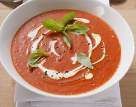
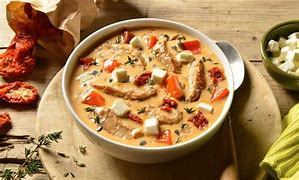

Tomatensuppe:
Öl in einem Topf erhitzen. Zwiebel- und Knoblauchwürfel darin unter Rühren andünsten. Tomatenwürfel, Brühe, Zucker, Salz, Pfeffer, Cayennepfeffer, Lorbeerblatt und Oregano hinzufügen, zum Kochen bringen und etwa 15 Min. bei schwacher Hitze mit Deckel kochen.
|
Süßkartoffelsuppe:
Eine Süßkartoffel in dünne Scheiben schneiden, daraus kleine weihnachtliche Motive ausstechen. Die Reste vom Ausstechen klein schneiden. Übrige Süßkartoffeln in Würfel schneiden. Zwiebel abziehen und fein würfeln. Öl in einem großen Topf erhitzen, Zwiebel- und Süßkartoffelwürfel darin anbraten. Mit Hühnerbrühe ablöschen, aufkochen und etwa 15 Min. bei mittlerer Hitze kochen, bis die Süßkartoffelstücke weich sind. |
Parmesan-Pilz-Suppe:
Speiseöl in einem kleinen Topf erhitzen. Schalottenwürfel und Pfifferlinge hinzufügen und etwa 5 Min. anbraten. Etwa 120 ml der Pilzflüssigkeit, Crème fraîche Kräuter, Brühe, Parmesan und Schmelzkäse zugeben, den Käse langsam bei mittlerer Hitze schmelzen lassen. |

Gyrossuppe:
Schweineschnitzel in dünne Streifen schneiden. Mit Salz und Pfeffer würzen. Die Hälfte Öl bei mittlerer Hitze in einem breiten Topf erhitzen. Fleischstreifen in 2 Portionen anbraten, so dass die Fleischstreifen eine schöne Farbe erhalten. Tomatenmark kurz mit anrösten. Dann Zwiebel-, Knoblauchwürfel und Tomatenstücke zugeben. Alles einmal aufkochen. 10 Min. bei mittlerer Hitze köcheln lassen. |